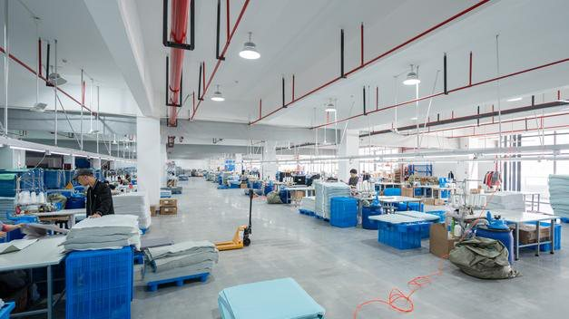
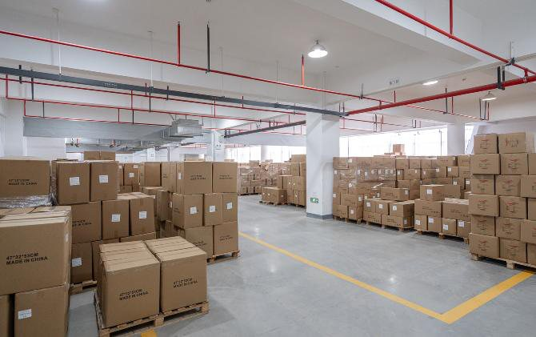

Our factory and workshops
Every step from fabric roll to export carton, in order. These are the workshops where your pads are made.
 101
101How a pad is made
101Our production base
Underpads are made under one roof: laminating, cutting, quilting, sewing, inspection and packing, followed by the warehouse and export loading. One site means one quality system and short lead times.
| Processes in-house | Laminating, cutting, quilting, sewing, inspection, packing |
|---|---|
| Products | Bed underpads, pet pads, chair pads, baby change mats, adult bibs |
| Quality system | ISO 9001; BSCI social audit |
 50
50Laminating workshop
The TPU film is laminated to the backing fabric on a continuous line. Bond strength and waterproofing decide how long a pad lasts, so every roll is checked before it goes to cutting.
| Barrier | TPU film 0.025 mm, 30 g/m²; or PVC |
|---|---|
| Check | Hydrostatic waterproof test per roll; peel check |
 51
51Automatic cutting
Fabric layers are spread and cut on automatic cutting tables, so every size in a shipment matches the spec sheet.
| Tolerance | ±2 cm on finished size |
|---|---|
| Sizes | 19 standard sizes and any custom size |
 52
52Quilting workshop
Multi-needle quilting machines join the top fabric and absorbent core. Dense quilting keeps the core from bunching after hundreds of washes.
| Patterns | 12 stock patterns or a custom logo quilt |
|---|---|
| Core | 200 / 230 / 270 / 340 g/m² |
 53
53Sewing lines
Edges are bound with a double-stitched bias binding; handles, tuck-in wings and labels are sewn on here.
| Edge | Bias binding, double-stitched, rounded corners |
|---|---|
| Add-ons | Handles (4 / 6 / 8), wings, woven and care labels |

105Sewing workshop overview
Several sewing lines run in parallel, so mixed orders (several styles, sizes and colours) are produced at the same time.
| Mixed orders | Several styles, sizes and colours per order |
|---|
 54
54Inspection
Finished pads are checked for size, stitching, binding, stains and waterproofing before packing. Final inspection follows AQL 2.5, and third-party inspectors are welcome.
| In-line | Size, stitching and binding checks |
|---|---|
| Final | AQL 2.5 report per order |

55Packing and warehouse
Pads are folded and packed to your packaging spec, labelled and loaded into export cartons. Every carton is weighed to catch count errors.
| Packaging | Polybag, header card, colour box, FBA labels |
|---|---|
| Carton | Export carton, weight check on every carton |
| Shipping | FOB / CIF / DDP |
Certificates and test reports
Copies with number and scope are provided with your order.
 103
103 104
104What we can document
| Fabrics | OEKO-TEX® Standard 100 fabric options (product class I for baby use) |
|---|---|
| Management | ISO 9001 quality management system; BSCI social audit |
| Chemical tests | REACH SVHC test; CPSIA test for baby products (US) |
| Performance | Hydrostatic waterproof test (ISO 811) after 50 / 100 / 300 washes; wash durability (ISO 6330); absorbency per grade |
| Final inspection | AQL 2.5 report per order; third-party inspection welcome |
Ready to build your washable underpad line?
Tell us your market, sizes and quantities. We reply with a spec sheet and price ladder within one business day.